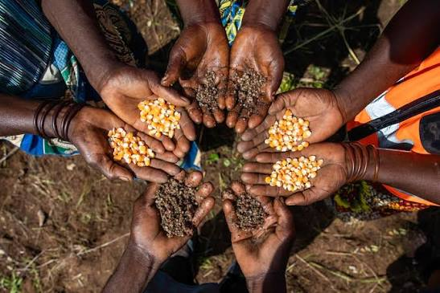

The Challenge & Vision
Sub-Saharan Africa’s agricultural economies face severe vulnerabilities and crop failures driven by compounding climate shocks, the dominance of fragile monocultures, and progressive environmental degradation. Seed Shield Africa bridges decentralized indigenous seed conservation, quantitative crop phenotyping, climate-smart intercropping packages, solar driers, and immersive eco-agritourism to restore soil health, prevent post-harvest loss, and secure regional food sovereignty[cite: 6].
Our Core Pillars
1. Decentralized Village Seed Vaults
Establishing community-led seed banks using low-cost PICS bags and silica gel desiccation (8-12% moisture control) across Western Uganda (Ibanda, Kabarole, Rubirizi) to safeguard traditional landraces[cite: 6].
2. Solar Driers & Post-Harvest Tech
Deploying advanced solar driers and hermetic storage technologies to smallholder farming cooperatives, drastically reducing post-harvest losses and securing grain quality.
3. Quantitative Phenotyping & MET
Partnering with Makerere University (MAKCSID) and regional ZARDIs to conduct multi-environment trials, biometric tracking in R/Python, and genetic gain evaluations[cite: 6].
4. Eco-Agritourism & Heritage
Monetizing biodiversity conservation through experiential eco-agritourism hubs featuring native plant walking trails, seed vault tours, and traditional heritage culinary dining[cite: 6].
Key Performance Indicators (KPIs)
| Category | Key Performance Indicator (KPI) | Target / Milestone |
|---|---|---|
| Conservation | Indigenous Landraces & Medicinal Trees Preserved[cite: 6] | 15
Our WorkContact UsSeed Shield Africa - Protecting Indigenous Seeds in Uganda 📧 Email: seedshieldafrica@gmail.com 📱 WhatsApp: +256 755 965 676 📍 Ishongororo Town Council, Ibanda District, Uganda Send Email WhatsApp UsIndigenous SeedsProtecting Local Seeds Seed Shield Our Seeds Gallery.jpg)
.jpg)
.jpg)
 |